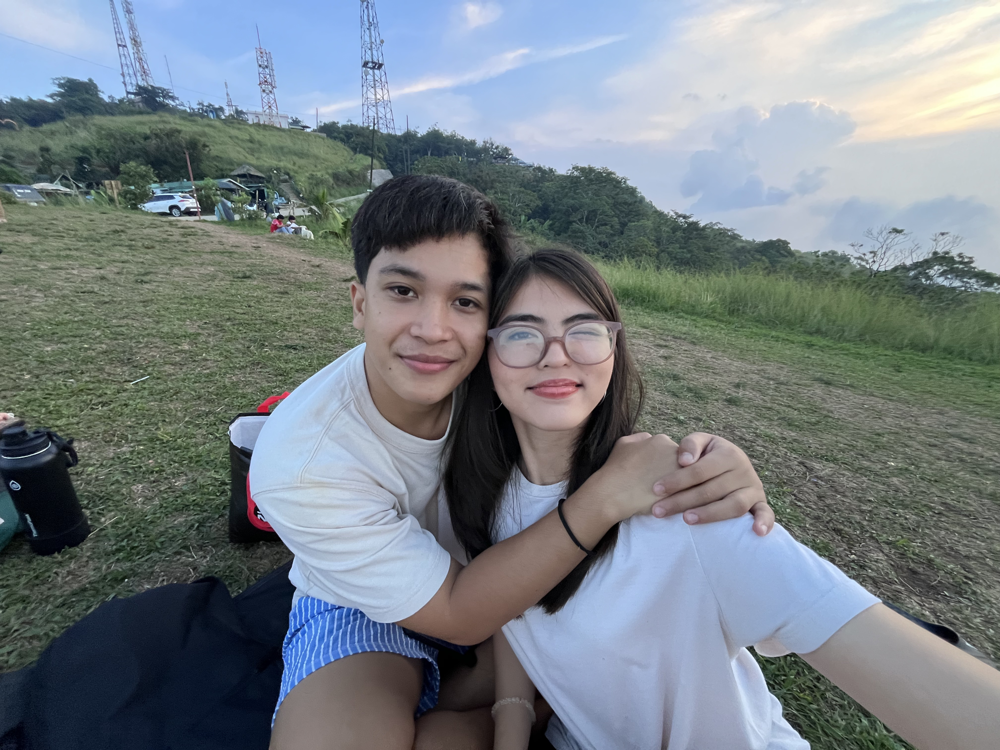
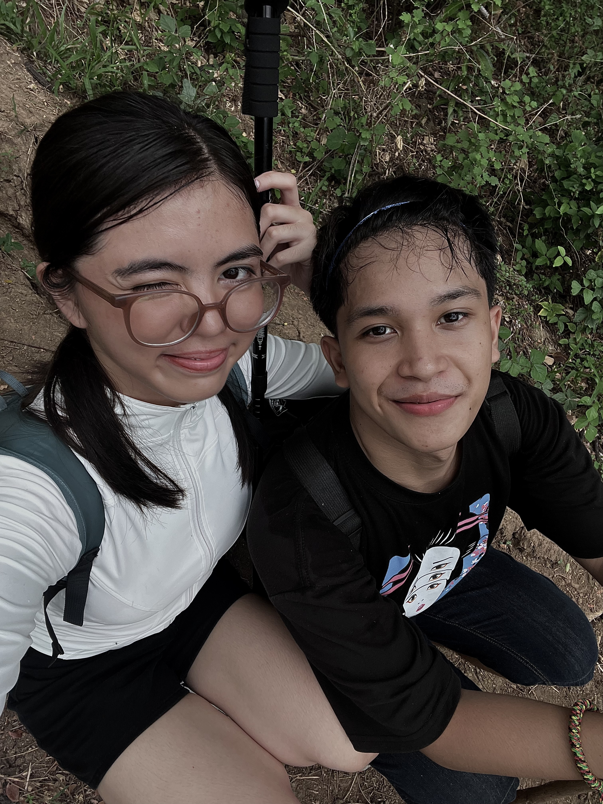
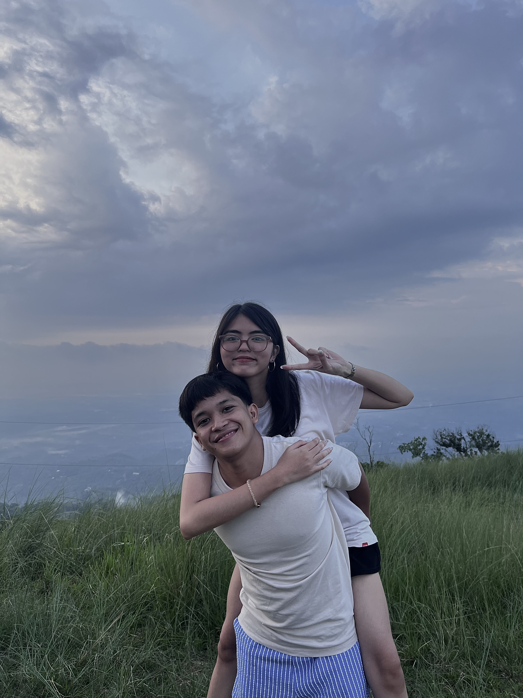

Hi, Baby! Happy 2nd Anniversary.
Two years ago, God made us meet. Looking back, our relationship is like a tiny seed grow into such a beautiful flower. Every away, every misunderstandig, every tear, every laugh has led us into growth. I am so much thankful that God gave us strength and courage to continue. Truly that u are one of God's greatest gifts in my life.
One of my favorite things about these two years is seeing you/us grow. We have watched each other become stronger, grow, and learn. I love seeing the way you keep trying even when things are hard, and I appreciate you for that. I am also loving how God is working in your life.
My biggest prayer is that we will keep growing closer to God every single day. I want to see you become the woman that God made you to be, and I can't wait to spend the rest of my life with that version of you. I want to have the rest of my life with you, holding your hand, being there for each other. As we take the journey of life together aki, I pray that the Lord will guide us and pour His grace over us.
No matter what the future brings aki, I hope we keep choosing each other, just like we have been doing these two years. I know we had our ups and downs, this year has been such a rough road for us. And I thank you for being my bestfriend, my safe place, and still choosing me. Happy 2nd Anniversary, my aki baby boo. I love you more than last year, and I can't wait to see the beautiful life that God still has in store waiting for us.
I love you so much, aki! More than words, and beyond measurement. I will forever cherish you, protect you, and keep you. May the Lord bless our relationship! Happy Anniversary, baby! Mahal na mahal kitaaaaa.